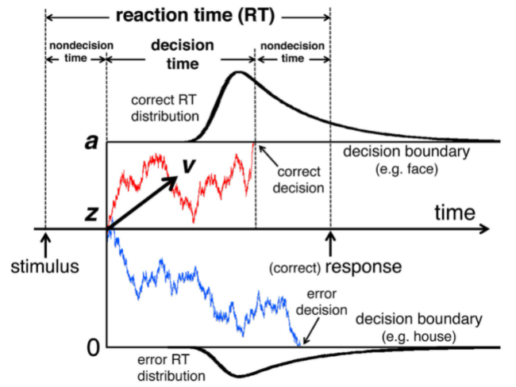

Artificial Intelligence and Decision Making
Introduction
Ahead we are going to discuss the interaction of two different topics, one is Artificial Intelligence and the other is decision making, so it is better to be introduced to both of them before moving ahead. Coming upon decision making first, as the name suggests, it is the process of making a decision, now it is needed to be understood that decisions are not black and white, if we have a choice, and one thing is completely correct and other is completely wrong than there is nothing to choose to, so no decision making is observed, it is a straight pathway, the decision is only made when both the choices have perks and disadvantages and the decision is made by optimizing the perks to maximum and disadvantages to minimum. Now if we will consider the above mentioned definition of Decision Making then we can say that all the target specific Artificially Intelligent Algorithms are nothing but decision making algorithms for a particular set of situations and once we will increase the size of this set to infinite we will achieve a Generic Artificially intelligent model that can make all the decisions about all the different aspects of life just like human beings but hopefully with better accuracy. For a better understanding let’s discuss one of the most basic AI or to be more specific machine learning algorithm of MNIST Fashion Database, it is a popular classification problem in which we have to classify different clothing items, so once we create a model for this classification problem, what all our model do is look at a new test data and makes the decision that in which class does it belongs to. In MNIST Database we have 9 classes, but suppose we increase the number of classes such that it includes all the clothing items present around the globe, it becomes a generalized clothing classification model, similarly if we will further increase the number classes by adding all the physical items than the model becomes even more generalized, so what all we are doing is to increase the scope of decision making of our model to make it more and more generalized. But the issue with increasing the scope is that with this kind of increase in scope, the complexity of the classification model also increases and thus we are not able to observe any generic Artificial Intelligent model in real life. But our own brain also do follows a decision making algorithm and we all know that it is pretty generic, so ahead we are going to explore the decision making algorithm followed by human brain and the scope that weather it can be replicated into a generic artificial intelligence algorithm or not and if can that what can be the process and what can be the possible issues in its creation.
Human Decision Making.
Now there is no generalized Human Decision Making Model that is world wide accepted but obviously there are a numerous amounts of hypothesis going around the human decision making and ahead we are going to discuss the most popular Human decision making hypothesis and will also side by side compare them with the Artificially intelligent algorithms in use and will try to figure out in which manner it can be replicated into an algorithm. Before jumping over to the algorithms let us discuss the types of decisions taken by human beings. So it has been believed in numerous literature works that humans make two types of decisions, which are Habit based decisions and Goal Based Decisions. Now as the name suggests habit based decisions are something which are in the habit of human beings, we don’t really focus much over the impact created by these kinds of decisions and also usually take these decisions within some seconds only, for example you can say that suppose we are at a shop and we have to choose between a packet of Cheetos and a Broccoli which both are of same price, now even though we will consider their impact over our health and the taste which they will provide still we will take merely minutes to choose between the two products and thus the decision will come under habit based decision making, habit based decisions can even become the part of our subconscious brain completely for instance we have to walk from our home to our workplace, then we won’t even think about the directions while walking and maybe can even reach our destination while using our phone or talking to someone or doing any other activity, which indicates that we at no point used our conscious brain while working on directions or while taking decisions like which pathway we have to take. On the other hand we make Goal based decisions, for instance choosing what to do after graduation, we won’t take that decision in just minutes, we will spend days and maybe months defining all the various choices that we have and then collecting information over all the choices, even after that we will consider the same problem from various perspectives and after considering impact of choosing each and every choice that we have, we will somewhere make the decision. As you can also see that the major difference between both kinds of decision making is about the time taken to make the decision. Some literature work even suggests that Habit based decisions are nothing but Goal based decisions which are taken over and over in a period of time to an extent that they became a part of our habit. In simple words initially every decision which we are taking for the first time in our life is a Goal Based Decision but when we face the same situation again and again in our life and have to choose between the same choices, somewhere our brain becomes so fluent in making those decisions that we even don’t think consciously before taking it. For instance if you have to visit your workplace for the first time from your home, you will consciously be noticing every pathway and will even ask others for directions before choosing a road but as you keep on walking the same path for weeks or maybe months you will reach a point where you will no more think about the direction and will just walk. So this concludes our two types of human decision making and the relationship between both of them. Now we can finally start discussing the various proposed models for human decision making.
Drift Diffusion Model for Human Decision Making Drift Diffusion model is a model to predict what type of decision someone will make and in what amount of time, it is a graphical manner to study how the human brain perceives information and evidence with passing time and how it all leads to the decision making? Before jumping on to the explanation of the model, there are some assumptions which were made. First is that the model only works for habit based decision making and second is that the model only works for binary decision making, which means that the model only works for a problem where decision makers only have two choices, and the model plots the drifting of human choice making in between those two choices, not only that but it even predicts that out of the two which decision is correct or not and in what circumstances decision makers will make correct decisions and what factors can lead to wrong decision making.
The model imagines the two choices as two parallel lines which are further parallel to the x axis which represents the time taken to make the decision and the direction of the plot in between the two lines tells about the deviation of the decision maker toward that option. The model takes some of the inputs in itself to predict the deviation, decision made and the time taken to make the decision.

There are four inputs that the basic drift diffusion model takes:
- Drift Speed (v): This denotes the speed in which the human brain is drifting towards one of the two choices.
- Non Decision Time (t): This denotes the initial time taken by human brain before even starting drifting in any of the given directions, in a simple manner during the period of this time human brain is not even thinking about the decision but is only perceiving the information provided regarding the situation and the problem about which it have to make the decision.
- Threshold Value (a): This denotes the value of distance needed to be drifted in one particular direction before the decision making, in other words, how much the human brain drift in any of the one direction, before choosing the option in that direction, so once human brain is drifted in that direction and crosses the threshold value, it chooses the choice to make the decision and act accordingly.
- Bias (b): Bias includes all the other factors which may affect the decision making of the person at that particular moment for that particular situation. So for instance, while choosing between a pack of cheetos and broccoli of same price you might choose cheetos over broccoli, but if you are shopping with someone, in front of whom you want to pretend as a fitness freak, you might be choosing broccoli over cheetos then, these kind of conditions are what comes under bias.
Now Drift diffusion model is majorly used to compare between the two given situation, for the same decision making, in other words, experiments are done keeping three out of the four parameters constant and changing only any one parameter and analyzing how the change affects the decision making and then psychologically diving into the reasons behind the observations. Exploring the algorithmic implementations of the discussed model, there are actually many existing coding algorithms replicating the drift diffusion model, which take the discussed four parameters as input and gives which decision will the user make and in how much time, this could also probably be converted into a machine learning algorithm too, but the issue with a model like this is that the input parameters are completely psychological and are needed to be extracted from a real life situation. So if we will go back to our MNIST fashion database problem, and if we have to choose among two categories, we can’t train the model directly converting the pixels to the features but moreover for using drift diffusion model we have to extract out the parameters from the decided features, now this part of the algorithm is something still not completely discovered, there is no generalized way to extract out these mentioned psychological parameters from a real life problem. But to our surprise there are some existing software that do help the researchers to extract these parameters out of the raw collected data. One such software is fast-dm. The software takes raw experimental data and gives out the parameters for that data according to researcher’s need, the user can also manually limit the output by defining some of the parameters they know and getting the other parameters accordingly. The software calculates the parameters using one of the three methods of Maximum Likelihood, Kolmogorov-Smirnov or Chi-Square.
So right now we have tools for both converting the raw data into the psychological parameters and using the psychological parameters to derive the decision to be made, and it can make a nice algorithm too, in a manner that we will get raw data over the binary questions and further will use that data to extract our the psychological parameters and will finally use those parameters as an AI model to predict the decision making for further binary questions out of the training dataset. So suppose we have image of a living being and we have to find out which organism it is, so we can start by binary questions like, if it is a reptile or a mammal, similarly moving ahead we can localize our search and reach to our result, but the thing is that in the raw data we clearly know which organism it is, thus it won’t create any problem but suppose the problem is more personality based, like choosing between pack of cheetos and broccoli, there is no correct answer for a question like this, it completely depends on situation and the personality of the person facing the situation and all the raw data over a question like this won’t be able to bring any usable parameters, thus on problems like this our model won’t be able to work and even if we will be able to make it work, it will be having high values of human bias, thus won’t be giving any useful results and thus can’t make a very appropriate generic Artificial intelligent model. The thing which lacks in a model like this is the analysis of emotions, as we know that emotions are a very important part of human decision making, emotions act as some reward and punishment process for humans and we all improve our decision making skills just to feel the more desirable emotions, this particular ability of human decision making is also analyzed in the following model we are going to discuss next.
Mathematical Model for Human Decision Making (HDM)
In this section we are going to discuss the Mathematical Model for Human Decision Making presented by S. Bezerra et. al. 1996. The model again divides the human decision making into two types or two states, which are instantaneous state and personalization state, which are similar to Habit based decision making and Goal based decision making respectively, but what different is that the model imagines both the stages are the integral part of human decision making, which means that no matter what kind of decision making it is, the human brain will initially switch to personalization stage and then will move on to instantaneous stage, we can imagine that for a goal based HDM, personalization stage will be long enough and instantaneous stage will just come right before decision making, and in case of a Habit based HDM, depending on time constraint, personalization stage can be really small too, or the process can just skip to instantaneous stage. Now in both the stages of HDM there are some variables affecting the HDM, for personalized state, these variables are:
- Ability to cope with Reality
- Knowledge
- Relation to time
- Expansiveness
- Ego
- Creativity
- Risk Shift
- Anxiety Level
- Authoritarian Attitude
And for the instantaneous state, the variables are:
- Fatigue
- Individual's Ability to Cope with stress at the given time
- Sleep deprivation
- State of Morale
- Level of Motivation
Further the model divides the whole decision making process into six parts which use the above mentioned variables to proceed ahead. The six stages are:
- Perception Activity
- Mental Representation
- Data Processing
- Problem Solving
- Choice of Solution
- Decision making to Act
Further the above mentioned parts are described by six equations which are explained ahead, in the equations di denotes the ith part of decision making, pi denotes the ith variable of personalized state, ti denotes the ith variable of instantaneous state, and F(x) and I(x) denotes a polynomial or exponential function which is different for all the di. The equations are as follows:
d1 = F(p1) + I(t1, t2)
So the above equation represents an equation for Perception Activity. Perception Activity can be understood as the action of perceiving the information through all the senses, and it is pretty logical to be the first part of the decision making, now according to the equation the perception activity of our brain depends upon the Ability to Cope with Reality, Fatigue and Ability to cope with stress at the given time. Next we have:
d2 = F(p2, p3) + I(t3, t4)>
So once we have perceived the information from all our senses, the next is the need to process the information, but even before processing we need to understand that our senses perceives a whole lot of data just in milliseconds and we first need to select the data which actually is important for the situation we are facing, this comes under the Mental Representation, which means the representation of all the collected information in a structured manner to be processed ahead. Now according to the second equation Mental Representation depends over Knowledge, Relation to Time, Sleep Deprivation and State of Morale. Obviously we need Knowledge or data on the Situation to represent it, next relation to Time sets a constraint on us to think what can be the best possible manner to represent the data, Sleep Deprivation affects our thinking process thus the representation of data and finally the state of Morale of a person defines the intentions and goals of a person and thus directly affects how different people see the same set of data.
d3 = F(p4, p5) + I(t5)
Next comes the data processing, as the name suggests the part in which we process the collected and structured data. Data Processing is affected by Expansiveness, Ego and Level of Motivation. Expansiveness defines how much a person focuses on the details of a issue, now it depends on situation to situation as we know that it isn’t always useful to dive into too much details of a problem but at the same time we can’t ignore the details of problems completely, next Ego describes how much faith do we have on our thinking process, so a high amount of ego means that we can straightaway rush to conclusions without completely processing the data, and too less amount of ego may means that we may keep on circling in the data processing while being too nervous to conclude something, finally Level of Motivation again is a situation dependent variable and from situation to situation if level of motivation is high the processing will be more detailed and if decision isn’t that important it will be quick and less detailed.
d4 = F(p6) + I(t3, t5)
Once we have processed the managed data we need to get a solution out of it, or more specifically the choices out of it, among which our solution will lie, this part of HDM is called problem solving and as the above equations suggest it depends over Creativity, Sleep Deprivation and Level of Motivation. Creativity helps to bring out more varied choices to solve the problem at hand, and again sleep deprivation affects the thinking process and thus limits the process, whereas level of motivation again decides how dedicated we are towards solving the problem.
d5 = F(p2, p5, p7) + I(t4, t5)
So after figuring out all the choices we do have in this part of HDM we have to consider all the choices we do have and have to choose the most appropriate from all. The Choice of Solution depends upon Knowledge, Relation to time, Risk Shift, State of Morale and Level of Motivation. We can easily see how all these mentioned variables do affect the choice of solution.
d6 = F(p3, p4, p8, p9) + I(t1, t2, t3)
Finally, after choosing the solution we have to proceed with, we have to make an action in response to the situation in hand. The Decision Making to Act is again affected by variables Relation to Time, Expansiveness, Anxiety level, Authoritarian Attitude, Fatigue, Individual Ability to Cope with stress and Sleep Deprivation.
Even after making the action, this is still not the end of the Human Decision Making Model, instead further there is a to track down the impact made by the decision made so that the whole model can keep on improving itself according to the situation. For this the decision made is analyzed on two constraints:
- Finding a satisfactory solution (one which would eliminate the perceived menace created by the environment, the internal needs of the individual, and/or the internal imbalance in response to the environment)
- The limit imposed by time (this refers to the obligation to react within a given period of time in order for the decision to be effective)
We are not further going into the details of this error detection process as it will be out of the scope of this report but till now we have understood the crucks of the Human Decision Making Hypothesis and in our next section we are going to use this knowledge of our to hypothesize an Algorithm for the creation of a generic AI model, further we will be discussing what all will be the issues in its practical implementation and what can be the possible manner to resolve them.
Hypothesis for Generic Artificial Intelligence
Now the whole discussed Human Decision Making model can be pictured as an Artificial Intelligence model, where the six parts of Human Decision Making can be assumed as six layers of our AI model, all the above discussed variables can be assumed as the weights of the equation used by the different layers of the AI model and in this whole model the data regarding the situation will be passed to extract out the decision to be made. Further the error detection process is similar to that of any AI algorithm where you analyze the results after each epoch and change the values of the weights based on the performance made on the already set constraints. With that being said, we have a very basic structure for an AI model with six layers and each layer controlled by a polynomial/exponential equation having a set of weights already discussed, but the major problem is regarding the values, and the derivation of these values, which we are going to discuss ahead.
Let us suppose to have the input regarding a situation in audio and visual form for our model to increase its usability at the most, so just like the 1st part of Human Decision making our first layer will also be of Perception activity, this layer will take all the raw data from the user and will convert it into a computer understandable and processable text data. For this particular layer we can start with Speech to text, NLP and CNN based algorithms to get the data in the textual format, now the accuracy and the amount of data, even the preferential area to be extracted data from will be directed by our weights of variables. So for the case of this layer the weights are Ability to Cope with reality, Fatigue and Ability to cope with stress. Ability to cope with reality and fatigue directly affects the amount of data to be extracted out of the input and as in the case of machines there is no sense to consider fatigue we can sum these two parameters into one for this layer, further Ability to cope with stress affects the region which will be prioritized while extracting out the data, so for instance we have an input of a stranger asking us to go with them, now if the Ability to cope with stress is low, most of the data will only be extracted out from the audio input and maybe from the facial expressions, but if the ability to cope with stress is high, the extracted data will also focuses on the tone of the audio, the complete body language and even on the environment and the time of asking. In a manner we can say the higher the ability to cope with stress the more aerial our extracted data will be but the lower the ability to cope with stress the less aerial but more detailed data will be extracted out. Mathematical equations to draw a relationship telling at what value of weight how much the extracting model will vary can be created easily with some experimental data. Also we can probably even use different extracting algorithms depending over the values of the weights and the type of input added into the model.
The next layer is about Mental Representation, or in other words it is the layer of Pre Processing, in a layer like this we will draw a relationship between various columns of extracted data to come up with the features to be processed ahead. So for the example of a stranger asking us to go with them we can maybe relate their tone of speaking and their expressions to come up with a new feature of emotion, telling the stranger is talking in which emotion while speaking, further we can draw a relation with the surrounding and the time to come up with new feature environment, it can further be changed with data columns telling how much or less populated the area is, and many more stuff like that. Again the functioning of this layer is guided by three weights or variables, named as Knowledge, Relation to Time, Sleep Deprivation and State of Morale. Knowledge here defines all the similar kinds of inputs which our model has faced earlier, our model will use those previous experiences to do the preprocessing and bring out the features from all the columns of data, the parameter of Knowledge will control that till what level of similarity we should use the previous experiences and the same goes with time, a function of time and knowledge parameter will control how much previous experience should be used while preprocessing. The weight of sleep deprivation will monitor the rigorousness of the comparison between the recent and the past inputs and finally the state of Morale controls that the which of the action taken in any previously similar situation should be repeated and which not, more like if the result of the action taken in any previous situation was acceptable than it can be replicated else not. So to sum up, this particular layer model compares the data with the data of similar previous inputs and tries to repeat the actions taken earlier to come up with a set of features which can further be used to process the situation.
The third layer of our model will be of Data processing in which the selected features of the previous layer will be passed to this layer to process out the actual problem. So if we take the instance of a stranger asking to come with them, the job of this particular layer is to understand that the problem in hand is whether to go with the stranger or not? Again the functioning of this layer is dependent over Expansiveness, Ego and Level of Motivation. For a machine to understand the problem statement itself is I believe the most difficult task because it is not like machines can actually understand any of the input you are feeding into it. What probably can be done is maybe using a search algorithm to search in the set of problems, keep on restricting the area of search with each set and reach to a point where the features of the problem in hand are most similar to the one in the dataset and that will be chosen as the problem statement of our AI algorithm. Here the parameter of Expansiveness controls the range of our search algorithm, we can’t consider the whole dataset of problems all the time, so the size of subset to be used will be defined by the Expansiveness, Further the region from where the subset of problems should be taken will rely over the parameter of Ego, the Level of Motivation controls the level of similarity we should aim for between the features of input dataset and problems in subset of problems, finally if there are more than one problem with same level of similarity with the input data, the problems again will be chosen on the basis of the parameter of Ego.
Next layer of our model is Problem solving, and as the name suggests, the purpose of the layer is to come up with a number of solutions for the problem selected in the previous layer on the basis of data processed in the initial two layers. The layer is controlled by three weights, Creativity, Sleep Deprivation and Level of Motivation. This layer is going to be a partially supervised layer, which will use the experiences of whenever a similar kind of problem was faced earlier to train over but will also use the distinct differences of the input to do mandatory changes in the solutions, the parameter of creativity will decide how much do we consider the distinct changes in the recent input, the more the creativity the more unsupervised our algorithm will be. Sleep deprivation will control the amount of training on the developed algorithm before coming up with a solution and finally Level of Motivation will control how many solutions will we come up with, and the number decided on the basis of level of motivation will be the number of top most similar past experiences which we will consider, we will train the model separately on all the chosen experiences on the basis of Creativity and Sleep deprivation as discussed above and by the end of the layer will be done with n number of options to choose from.
As expected the fifth layer of our model is Choice of Solution, where the model will choose from all the solutions derived in the previous layer. The parameters controlling this layer are Knowledge, Relation to time, Risk Shift, State of Morale and Level of Motivation. This particular layer will mark all the options on the basis of knowledge (how much similar it is to the previously taken solutions), time (how much time will the option take for complete execution), risk (how much are the chances of the option to fail), Morale (how much impact will the option create over other involved people, and is it a good impact or bad) and Level of Motivation (how much important is the outcome for user). Once we will mark all the options, the priority of each marking will be decided on the basis of respective parameter, the option with most rating in the most prior parameter will be selected, if there are more than one than we can move to the next prior parameter and so on until we get our final solution.
Finally the last layer is about Decision Making to Act. The layer is controlled by parameters Relation to Time, Expansiveness, Anxiety level, Authoritarian Attitude, Fatigue, Individual Ability to Cope with stress and Sleep Deprivation. The particular motto of the layer is to convert the computer understandable numeric solution to a human executable solution. So if we roll back to our example of a stranger asking us to come with them and our model decided that it should not go with them, then there can be multiple ways to present that express that solution and the particular way to use will be decided from the previously stored database on the basis of controlling parameters.
Conclusion and Future Work
So with that we concluded our basic hypothesis of a generalized artificial intelligence model. The first one inspired from the Drift Diffusion model is close to reality and much simplistic unless it comes to converting the emotions felt into numerical values, that is a tricky part we are not able to find out. On the other hand the Hypothesis based on Mathematical Model for human decision making is pretty complex, vast and will take a lot of data and time to compute but still feels doable. To sum up we can say that the model consist of six layers, each of which layer is a complex AI model in itself, all the six layers and their functioning is controlled by 14 different weights, out of these 14 weights, 9 are personalized weights and 5 are instantaneous, which means that initial 9 weights will remain constant over the problem, now being constant doesn’t mean that they won’t change through the continuous loss calculation and error detection, it means that model will have only one set of these 9 parameters and that set will only be used in each problem, on the other hand the instantaneous parameters are something for which a new set will be created for every new problem. The overall model can be trained using reinforcement learning where the parameters evolve after making each and every decision. Not only that but each and every decision made with all it’s parameters and results should also be added to the database of the model for future use. There is much more to explore ahead in this hypothesis, the detailings of all the layers, what will be the most suitable algorithms to be used in the layers, how the dataset that big should be managed, what can be the most effective way to connect all the layers with each other, what can be the most effective loss calculation algorithms and many more. Even though we know psychologically how the parameters are going to affect the model we still need a way to display it out as a mathematical equation. There is so much more to be done, and it only can be possible with a perfect balance of mathematics, psychological understanding and algorithmic thinking. Generic AI model is possible but still a long way ahead to go.
Get in Touch
Up for all kinds of collaborations which can take us close to understanding human brain. Comfortable with all kinds of BioInformatic softwares. Further experienced in developing efficient AI Models, with decent Accuracy. Can also contact me to get more detailed information regarding any of my work over the site.
veb7vmehra@gmail.com